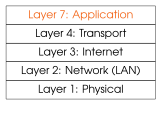
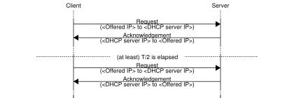
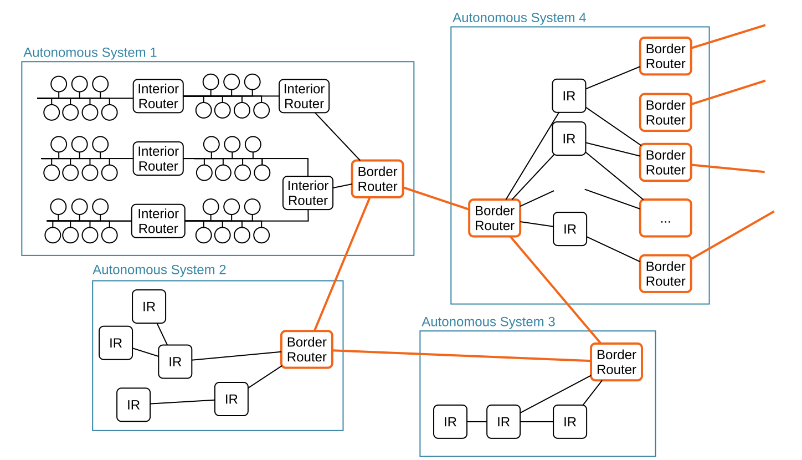

[10] Capa 7: Aplicació¶


La capa superior de la pila de xarxa TCP/IP inclou totes les aplicacions que utilitzen TCP o UDP per al transport. És, amb diferència, la que conté el nombre més gran de protocols, i on aquests protocols es creen i se substitueixen més ràpidament.
A més de les aplicacions d’usuari, hi ha diversos sistemes i protocols auxiliars que ajuden en la configuració i el funcionament de tots els hosts (equips connectats a la xarxa) d’Internet. En aquest capítol s’aborden alguns dels més crítics.
[10.1] DNS – Sistema de noms de domini¶
El protocol DNS és responsable de traduir noms de domini com ara ietf.org o
cv.uab.cat a adreces IP que es poden posar dins dels datagrames.
Els serveis DNS funcionen tant sobre TCP com sobre UDP, és a dir, es poden habilitar tots dos protocols de transport. En tots dos casos, s’utilitza el port 53.
[10.1.1] Jerarquia¶

Els noms de domini d’Internet són seqüències de noms separats per punts. Aquests noms es presenten del més específic al més general de manera jeràrquica. Per exemple, a cv.uab.cat, cv pertany a uab.cat, i uab a cat. El nom de més a la dreta, p. ex., cat o com, ha de ser un dels dominis de primer nivell de la IANA.
Els servidors DNS s’organitzen de la mateixa manera jeràrquica que aquests noms de domini. Hi ha \(13\) servidors DNS arrel (de Root-A a Root-M), que són responsables de tots els dominis de primer nivell. Pots preguntar a qualsevol d’ells per com, però també per su, i en sabran la resposta.
Això no vol dir que cada servidor arrel conegui tots els dominis dins del seu domini de primer nivell (p. ex., uab.cat): només coneixen aquests dominis de primer nivell. (p. ex., cat). La feina dels servidors DNS arrel és redirigir-te a un altre servidor DNS encarregat del domini de primer nivell que has demanat.
De manera semblant, els servidors DNS responsables de cat coneixeran qualsevol domini *.cat existent (p. ex., uab.cat), però no els subdominis (p. ex., cv.uab.cat). La feina d’aquests servidors DNS de domini de primer nivell és redirigir-te a altres servidors DNS autoritatius per al domini de segon nivell sol·licitat (p. ex., uab.cat). Els dominis de segon nivell poden llavors estructurar la seva zona de noms com vulguin, incloent-hi qualsevol nombre i profunditat de subdominis, així com la traducció de nom a IP dins de la zona d’autoritat.
Exercici 10.1
Tothom fa servir el DNS constantment. Quins serien els riscos de tenir un sistema de traducció de noms centralitzat en lloc de la naturalesa distribuïda del DNS?
Registres¶
El DNS es pot veure com una base de dades distribuïda amb diferents tipus d’entrades anomenades registres. Els principals són:
-
A: Una entrada A associa un nom de domini a una adreça IPv4.
-
AAAA: Una entrada AAAA associa un nom de domini a una adreça IPv6.
-
NS: Una entrada NS apunta a un servidor DNS que pot ajudar.
-
MX: Una entrada MX proporciona el nom de domini del servidor de correu electrònic que gestiona els missatges d’un domini.
-
CNAME: Una entrada CNAME associa un nom de domini a un altre nom de domini.
Les aplicacions fan peticions als servidors DNS indicant el tipus de registres que els interessen. Les respostes del servidor poden ser els registres A o MX demanats, però el client també pot rebre una redirecció a un altre DNS (NS) o un àlies a un altre nom de domini (CNAME).
Resolució¶
La naturalesa distribuïda i jeràrquica de la base de dades del DNS fa que de vegades calgui intercanviar múltiples missatges per satisfer una consulta DNS.
Per exemple, l’Alice pot fer una resolució completament iterativa tota sola. Les dues primeres respostes contenen una entrada NS que apunta al següent servidor DNS i l’adreça IP d’aquest servidor DNS, però no l’adreça IP del cv.uab.cat demanat.

El proveïdor d’Internet (ISP) o l’empresa de l’Alice probablement oferiran servidors DNS la feina dels quals és rebre les peticions de l’Alice i resoldre-les per ella de manera recursiva.

La combinació de la resolució recursiva i les taules de memòria cau fa del DNS un sistema força eficient, amb una disponibilitat altíssima i una latència baixa.
Exercici 10.2
Pots utilitzar les eines host i dig per fer consultes DNS i veure’n els resultats. Per exemple, la meva sortida de dig uab.cat -t ns conté les línies següents:
;; QUESTION SECTION:
;uab.cat. IN NS
;; ANSWER SECTION:
uab.cat. 172800 IN NS dns.uab.es.
;; ADDITIONAL SECTION:
dns.uab.es. 172112 IN A 158.109.0.1
-
Quin tipus de registre he demanat?
-
Quins dos tipus de registre he rebut?
-
Per què he rebut dos tipus de registre?
-
Fes una resolució iterativa manual de
cv.uab.cat. Pots començar amb alguna cosa comdig @202.12.27.33 cv.uab.catper consultar el servidor arrel M.
[10.2] DHCP – Protocol de configuració dinàmica de hosts¶
Per poder participar plenament a Internet, un host ha de tenir correctament configurats els aspectes següents:
-
Adreça IP: L’adreça IP és necessària per identificar un node a la xarxa, i perquè aquest node sàpiga quins missatges van adreçats a ell.
-
Màscara de subxarxa: Els nodes l’han de conèixer per determinar quan han de lliurar els datagrames directament, i quan indirectament.
-
IP del gateway (passarel·la): Cal l’adreça IP d’almenys un router (encaminador) per lliurar indirectament missatges amb destinació fora de la LAN (xarxa d’àrea local) actual.
-
Adreça IP del servidor DNS: Tot i que no és estrictament necessària per utilitzar TCP/IP, l’adreça d’un servidor DNS és extremadament útil, i necessària per resoldre noms de domini a adreces IP.
Tradicionalment, aquests paràmetres s’havien de configurar manualment a cada ordinador. Avui dia, la majoria dels ordinadors d’usuari es configuren automàticament amb DHCP. Els sistemes operatius moderns contenen un client DHCP que consulta periòdicament la LAN fins que queda configurat.
Nota
El maquinari de xarxa ve amb una adreça MAC per defecte preconfigurada. A més, un node necessita conèixer la seva adreça MAC per fer funcionar el protocol DHCP. Per tant, les adreces MAC no es configuren mitjançant DHCP.
DHCP funciona sobre UDP. Els servidors DHCP escolten al port 67, i els clients escolten al port 68. L’intercanvi DHCP ideal consta de \(4\) missatges: Discovery, Offer, Request, Acknowledgement.

-
Discovery
L’objectiu d’aquest missatge és trobar servidors DHCP disposats a proporcionar una configuració.
En la primera comunicació, el client no coneix la IP del servidor DHCP. En lloc d’això, utilitza:-
La seva adreça MAC com a adreça MAC d’origen.
-
L’adreça de broadcast (difusió) de la LAN (
ff:ff:ff:ff:ff:ff) com a adreça MAC de destinació. -
0.0.0.0com a IP d’origen, que vol dir “desconeguda”. -
L’adreça de broadcast local,
255.255.255.255, com a IP de destinació.
-
-
Offer
Zero o més servidors respondran al client amb ofertes de configuració. Aquestes configuracions (p. ex., adreces IP) no són propietat del client fins que el servidor envia un DHCP Acknowledgement.
El servidor porta el control d’un conjunt d’adreces que assigna dinàmicament als clients. Les adreces IP s’ofereixen durant un període de temps fix, després del qual caduquen tret que es renovin (vegeu més avall). Les adreces que no es renoven tornen al conjunt i s’ofereixen de nou als clients a mesura que fan peticions.-
El servidor pot utilitzar la seva adreça IP real i la que ofereix al client.
-
El client sap que n’és el destinatari perquè el servidor té en compte l’adreça MAC d’origen del Discovery del client.
-
-
Request
El client tria una de les ofertes rebudes i demana que es completi l’assignació.-
El client utilitza l’adreça de broadcast local,
255.255.255.255, com a destinació. -
El client manté
0.0.0.0com a origen perquè l’adreça oferta encara no és seva.
-
-
Acknowledgement (ACK)
El servidor confirma la petició. Un cop el client rep aquest ACK, comença a utilitzar la configuració oferta com a pròpia. Aquest ACK no s’ha de confondre amb el de TCP. -
Negative Acknowledgement (NACK)
També és possible que el servidor denegui la petició, p. ex., si ha passat massa temps des de l’oferta. En aquest cas, s’envia un Acknowledgement negatiu (NACK). Si es rep un NACK, el client ha de tornar a la fase de Discover.
Quan un servidor DHCP cedeix una adreça a un client, ho fa durant un període de temps limitat \(T\). Aquest període el fixa el servidor DHCP, i es pot configurar. Un cop transcorregut \(T/2\), els clients poden intentar renovar la configuració cedida. Per fer-ho, es repeteix el cicle Request-Acknowledgement al llarg del temps fins que un dels dos extrems no el completa a temps, o bé el servidor DHCP envia un NACK.

Exercici 10.3
El router domèstic típic implementa alhora un client DHCP i un servidor DHCP. Explica com és possible i per què és útil.
[10.3] Sistemes autònoms¶
L’encaminament es fa salt a salt, utilitzant taules d’encaminament tal com s’ha explicat a la Secció 8.3. Aquestes taules s’han de coordinar a gran escala per garantir la connectivitat del graf amb tots els hosts d’Internet.

Organització¶
Per facilitar aquesta coordinació, les LAN s’agrupen en sistemes autònoms (AS). Aquests gestionen blocs d’adreces IP que no se solapen (w.x.y.z/N), amb propietat i gestió separades. Moltes empreses, universitats i ISP tenen els seus propis AS, que estan llistats públicament. Per exemple, la xarxa de la UAB pertany a l’AS13041.
Els punts d’intercanvi d’Internet (IXP) són un tipus especial d’AS el propòsit dels quals és interconnectar altres AS, en lloc d’allotjar serveis i/o clients. Per descomptat, fer funcionar aquests IXP no és gratuït, així que s’estableixen relacions comercials amb els AS interconnectats. Alguns IXP es comprometen a donar servei a qualsevol que compleixi els seus requisits bàsics, no estan controlats per cap operador únic, i ofereixen preus transparents i sovint equitatius als seus clients. Aquest tipus d’IXP s’anomena punt neutre (NP), en contraposició als punts no neutres utilitzats, p. ex., per un sol operador de xarxa.
Tots els AS fan funcionar routers frontera (BR) per interconnectar AS. Quan un router frontera rep un datagrama amb destinació dins de l’AS, el reenvia a través dels routers interns (IR) de l’AS. De manera semblant, quan un host dins d’un AS necessita contactar amb un host d’un altre AS, els datagrames es reenvien a través de routers frontera fins que arriben a l’AS de destinació i, finalment, a la LAN de destinació.
Configuració de la taula d’encaminament¶
Configurar manualment les taules d’encaminament de tots els routers frontera i routers interns seria massa costós i propens a errors. En lloc d’això, s’utilitzen diferents algorismes per configurar-les automàticament.
-
Dins de l’AS, els routers interns i els routers frontera utilitzen un dels protocols de gateway interior disponibles. Sovint s’utilitza RIP (Routing Information Protocol) per la seva configuració relativament senzilla. Dit això, els AS poden triar lliurement l’algorisme que utilitzen internament.
RIP implementa una variant de l’algorisme de camí més curt de Bellman-Ford per minimitzar el nombre de salts que els datagrames han de fer dins de l’AS. Periòdicament (p. ex., cada \(30\) s), cada IR i BR:-
Anuncia la seva distància percebuda als altres routers de l’AS.
-
Actualitza les seves distàncies percebudes a partir dels anuncis dels altres routers.
-
Actualitza en conseqüència la seva taula d’encaminament cap a totes les LAN de l’AS.
Exercici 10.4
RIP utilitza el nombre de salts com a mètrica de cost. Per què podria ser problemàtic? Com es pot resoldre aquest problema?
-
-
Entre AS, només cal configurar els routers frontera; els routers interns simplement han de dirigir el trànsit exterior a través dels routers frontera.
Els routers frontera executen un protocol de gateway exterior a més del protocol de gateway interior utilitzat dins de l’AS. Els diferents AS s’han de posar d’acord en l’algorisme que utilitzen, de manera que normalment s’utilitza BGP (border gateway protocol).
BGP és un protocol més complex que RIP. Aquesta complexitat és necessària perquè BGP coordina routers frontera que pertanyen a AS diferents, és a dir, amb propietaris diferents:-
RIP utilitza un únic nombre (la distància, és a dir, el nombre de salts) per guiar un algorisme de camí més curt sobre un graf. BGP utilitza camins en lloc de distàncies. Això permet a BGP triar rutes amb més salts, però més convenients per a l’AS, p. ex., en termes de temps, cost econòmic, càrrega interna, etc.
-
BGP es va dissenyar tenint en compte la seguretat i la confiança, i inclou mecanismes per verificar l’autenticitat dels camins anunciats per un router frontera.
-
Nota
BGP també es pot utilitzar com a protocol de gateway interior de l’AS. Normalment això només ho fan AS molt grans.
Exercici 10.5
Com pot BGP traduir interessos econòmics en configuracions d’encaminament?